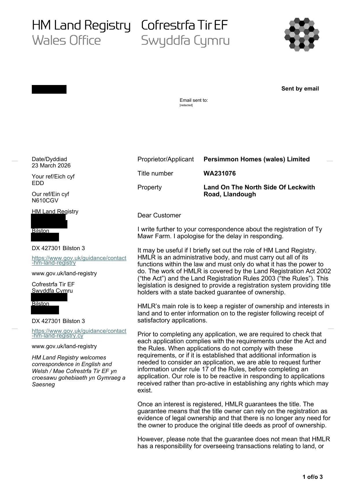

GHF-E106-R92-A1 correspondence (no disclosure)
Letter: registration history of Ty Mawr Farm

Transcript
1 of/o 3 Sent by email Date/Dyddiad 23 March 2026 Your ref/Eich cyf EDD Our ref/Ein cyf N610CGV HM Land Registry [address redacted] Bilston [address redacted] DX 427301 Bilston 3 https://www.gov.uk/guidance/contact -hm-land-registry www.gov.uk/land-registry Cofrestrfa Tir EF Swyddfa Cymru [address redacted] Bilston [address redacted] DX 427301 Bilston 3 https://www.gov.uk/guidance/contact -hm-land-registry.cy www.gov.uk/land-registry HM Land Registry welcomes correspondence in English and Welsh / Mae Cofrestrfa Tir EF yn croesawu gohebiaeth yn Gymraeg a Saesneg Proprietor/Applicant Persimmon Homes (wales) Limited Title number WA231076 Property Land On The North Side Of Leckwith Road, Llandough Dear Customer I write further to your correspondence about the registration of Ty Mawr Farm. I apologise for the delay in responding. It may be useful if I briefly set out the role of HM Land Registry. HMLR is an administrative body, and must carry out all of its functions within the law and must only do what it has the power to do. The work of HMLR is covered by the Land Registration Act 2002
Read more
(“the Act”) and the Land Registration Rules 2003 (“the Rules”). This legislation is designed to provide a registration system providing title holders with a state backed guarantee of ownership. HMLR’s main role is to keep a register of ownership and interests in land and to enter information on to the register following receipt of satisfactory applications. Prior to completing any application, we are required to check that each application complies with the requirements under the Act and the Rules. When applications do not comply with these requirements, or if it is established that additional information is needed to consider an application, we are able to request further information under rule 17 of the Rules, before completing an application. Our role is to be reactive in responding to applications received rather than pro-active in establishing any rights which may exist. Once an interest is registered, HMLR guarantees the title. The guarantee means that the title owner can rely on the registration as evidence of legal ownership and that there is no longer any need for the owner to produce the original title deeds as proof of ownership. However, please note that the guarantee does not mean that HMLR has a responsibility for overseeing transactions relating to land, or Requester Email sent to: __ __ __ __ [redacted] 2 of/o 3 for deciding disputes about ownership or boundaries. The responsibility for this lies with the property owners, their advisers or the courts. HMLR’s role therefore is limited and as mentioned above, is essentially administrative – to keep a record of the outcomes of transactions (as long as it receives the necessary application), and to respond to requests for information (as long as it has the information and is entitled to disclose it). It is also worth explaining at this stage that when a property is registered, it is the legal owner who is shown in the Property Register; he is then described as a “registered proprietor”. The legal owner is entitled to exercise owner’s powers (such as selling). With regards to your query, I have investigated the files relating to the first registration and I can confirm the following: 1. It appears Ty Mawr Farm was originally registered under two different title numbers, WA231076 and WA240304. These two titles were amalgamated. Title WA240304 was closed as a result of the amalgamation and the registration continued under title WA231076. [address redacted] application was submitted by Linklaters & Paines of Barrington [address redacted] properties Limited of Britannic House, Moor Lane, London, EC2 as proprietor. The land was conveyed to BP Properties Limited by a Conveyance dated 19 Nov 1982 made between (1) The British Petroleum Pension Trust Limited, (2) BP Trustees Limited and (3) BP Properties Limited [address redacted] The application was again submitted by Linklaters & Paines of [address redacted] register BP properties Limited of Britannic House, Moor Lane, London, EC2 as proprietor. The land was conveyed to BP Properties Limited by a Conveyance dated 23 May 1975 made between (1) The British Petroleum Pension Trust Limited, (2) BP Trustees Limited, (3) BP Properties Limited. If you wish to obtain an official copy of the documents referred to above, please refer to our Practice Guide 11 for further details - Inspection and application for official copies (PG11) - GOV.UK Please note HM Land Registry does not have any investigative powers and on the basis of a review of the files we hold there is no evidence of a mistake in the register. 3 of/o 3 If you would like to discuss this correspondence or require it in an alternative format please contact us, quoting our reference. Yours faithfully, Lisa Griffiths [phone redacted]
Artifact description
Automated notification forwarding an official PDF letter concerning an application or property interest.
| Catalogue ID | GHF-E106-R92-A1 |
|---|---|
| What it is | PDF document from HM Land Registry. Attached to an email received on 23 March 2026, their reference WA231076/A/216/LG. 3 pages. |
| From | HM Land Registry |
| Email received | 23 March 2026 |
| Their reference | WA231076/A/216/LG |
| Pages | 3 |
| File | Correspondence.pdf (171 KB) |
| State | Read |
Our integration
Part of the records enquiry thread with HM Land Registry opened 24 March 2026. The thread's standing classification is “correspondence (no disclosure)”. Statutory time: no statutory deadline.
Concern to test: whether this reply answers the question as asked, or a narrower one. Not checked against the original request wording here.
What cuts against the case: the body disclosed material, which is the opposite of a refusal; what it disclosed is shown here as sent.
Working-theory relevance · 29 October 2026: The registration-history letter is an official roadmap of the Registry’s recorded chronology, not a substitute for the originating application, title instruments, plans or decision records. Compare its dates and title-number references with the full WA231076/WA240304 files; any inconsistency should be described precisely before it is used to support the theory. Theory and test schedule.
Related: GHF-E106-R91-A1 — Holding letter: paper files being retrieved · The covering email · What They Don’t Say: WTDS-74fd66b3-1 · EV-0351 in the evidence catalogue · Timeline · Disclosure Dartboard